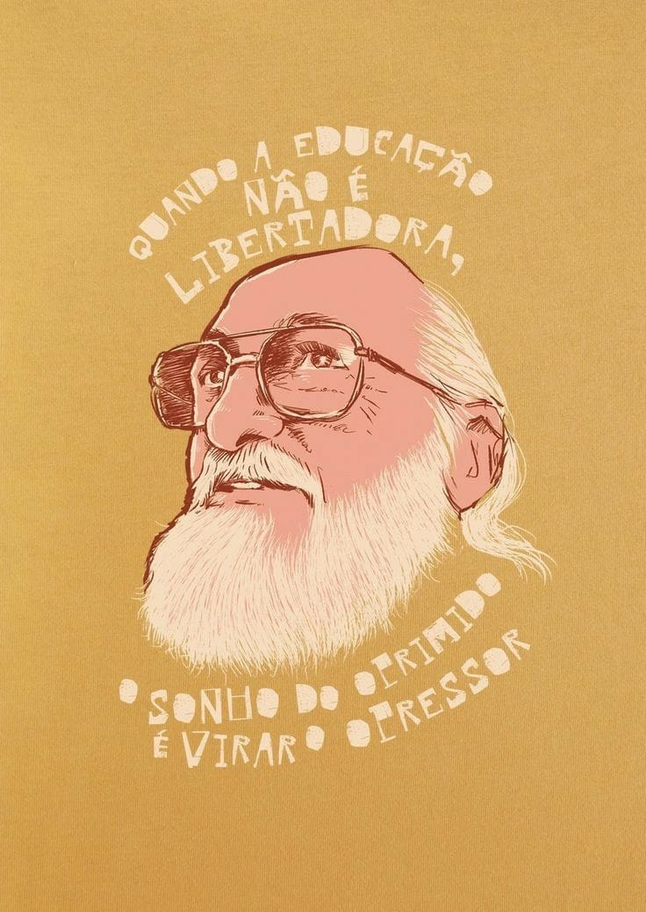
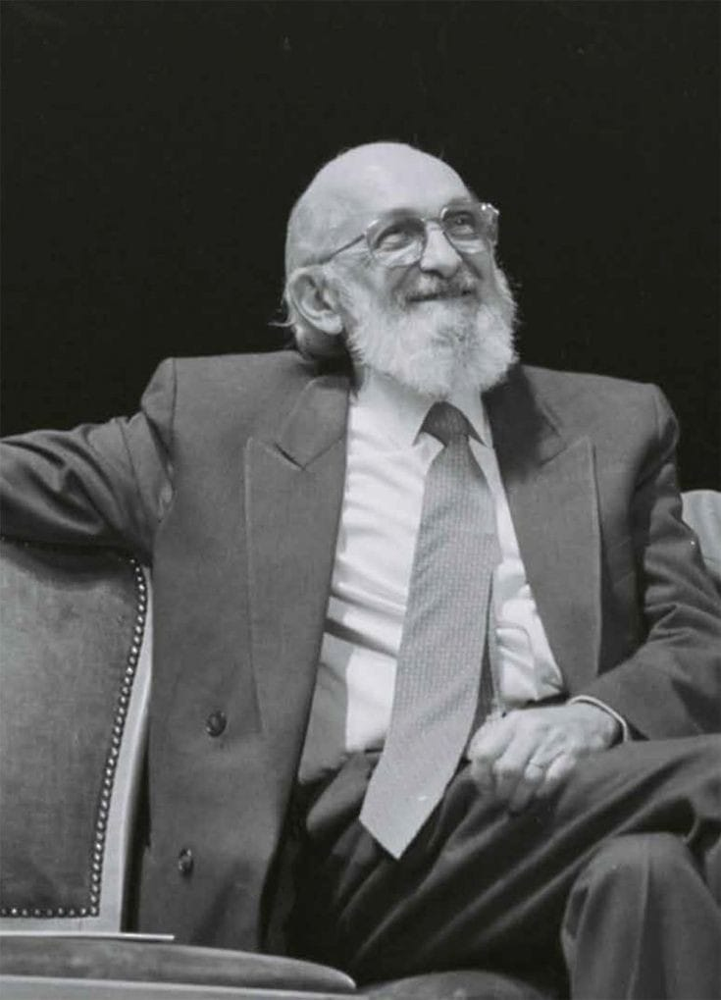
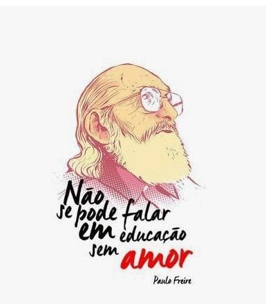
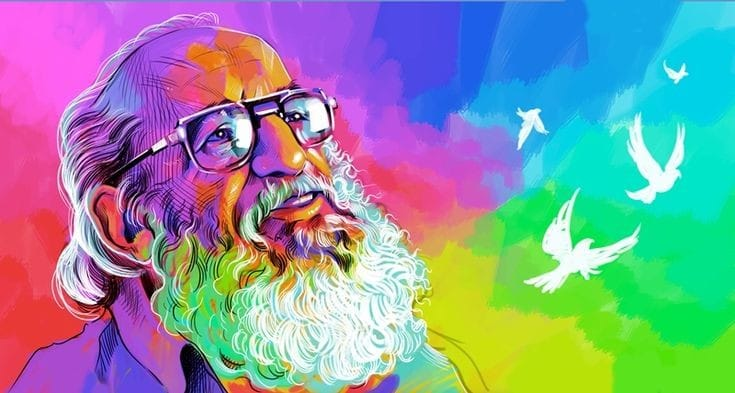
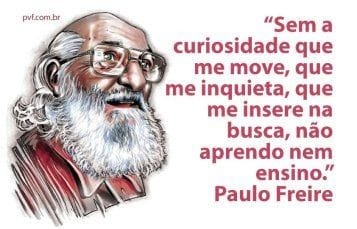
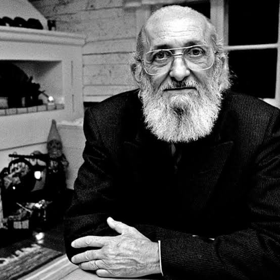
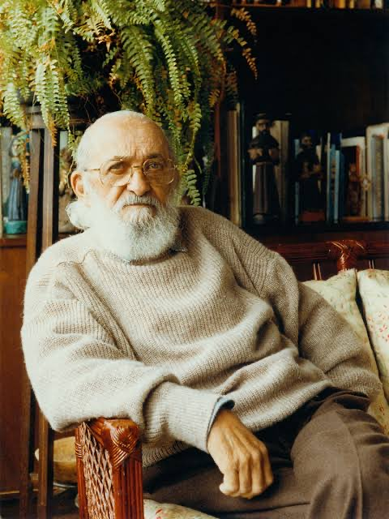
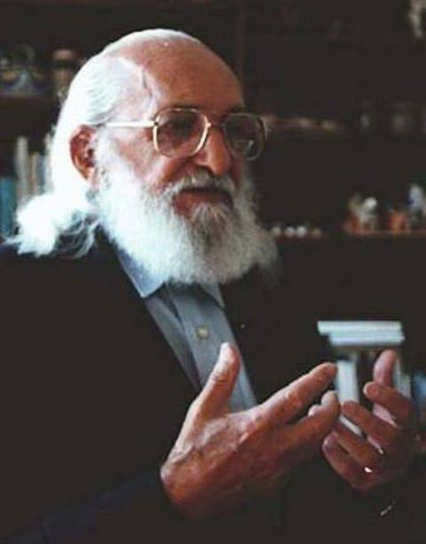
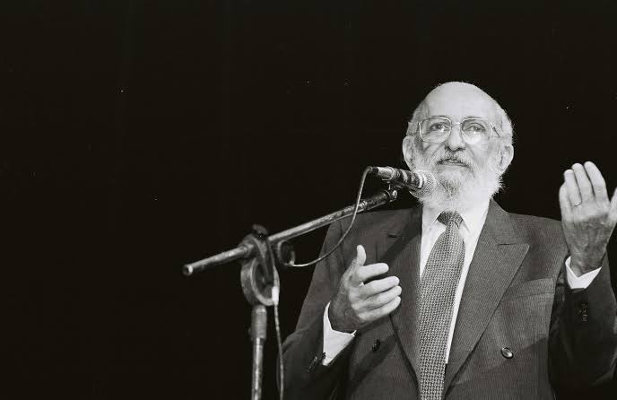

Há 100 anos, em 19 de setembro de 1921, nascia em Recife, Pernambuco, Paulo Reglus Neves Freire, que se tornaria ao longo de sua história um dos mais importantes pedagogos e filósofos do Brasil, além de ser reconhecido mundialmente por suas contribuições para a educação. Formado em Direito pela Universidade Federal de Pernambuco em 1943, Paulo Freire nunca se dedicou à profissão, optando por trabalhar como professor de língua portuguesa em uma escola de segundo grau. Já em 1946, assumiu o cargo de diretor do Departamento de Educação e Cultura do Serviço Social no Estado de Pernambuco, onde teve seu primeiro contato com o processo de alfabetização de camponeses e operários pernambucanos. Essa experiência foi o início de seu trabalho como educador e formaram a essência de suas ideias e de seu método de ensino, posteriormente chamado de Método Paulo Freire.
Este artigo reflete sobre as contribuições de Paulo Freire no ensino de Matemática para a Educação de Jovens e Adultos (EJA), e tem como objetivo analisar os pressupostos freireanos nas práticas pedagógicas de professores que ensinam Matemática nessa modalidade de ensino. A metodologia utilizada foi a pesquisa bibliográfica que abordou pontos importantes sobre: Paulo Freire e sua importância para a Educação brasileira; Educação de Jovens e Adultos; Modalidade de ensino; O ensino da Matemática na EJA; Os pressupostos freireanos e a Educação Matemática no contexto da Educação de Jovens e Adultos, na perspectiva da Etnomatemática trazendo as metodologias mobilizadas para a difusão de conhecimentos nessa modalidade de ensino e a repercussão do processo de ensino e de aprendizagem articulados aos estudos da Etnomatemática. A pesquisa revelou que os pressupostos freireanos articulados aos estudos da Etnomatemática estão presentes quando o professor cria argumentos e faz levantamento de problemas socioculturais e educativos com os estudantes para trabalhar os conteúdos matemáticos. Assim, os estudos freireanos, os da Etnomatemática e da Educação Matemática apresentam interlocução na efetivação e organização do ensino de Matemática para a EJA, tendo a problematização e o diálogo como elementos propulsores na construção do ensino e da aprendizagem.
Paulo Freire é o patrono da educação brasileira por reconhecimento ao mérito de seu trabalho que garantiu a alfabetização de milhares de pessoas no Brasil e no mundo.
Nascido em Recife, Pernambuco, em 1921, ele era de uma família de classe média, filho de um policial militar e de uma dona de casa. Aprendeu a ler e escrever com os pais, e esta experiência ele levou para seus estudos sobre educação, que consistiam em alfabetizar explorando a realidade do alunos e suas experiências individuais. Além de agricultores, como diretor do Departamento de Educação e Cultura da Indústria, nos anos 1940, Freire alfabetizou jovens e adultos carentes que trabalhavam no setor.
Em um livro sobre a experiência educacional em Angicos, no Rio Grande do Norte, Carlos Lyra conta a saga que resultou na alfabetização de trabalhadores locais, já sob o método de Pauo Freire, no início dos anos 1960. Em "As quarenta horas de Angicos: uma experiência pioneira de educação", ele relata como cerca de 300 angicanos foram alfabetizados em 40 horas. Um feito junto a agricultores que aprenderam a partir de suas experiências na lavoura a conhecer as palavras, a ler e a escrever.
As ideias de Paulo Freire inspiraram um Plano Nacional de Educação, na gestão de João Goulart. Mas com a mudança no cenário político e o advento da ditadura militar, o grande projeto do educador foi deixado para trás e ele foi preso. Certa vez, em conversa com uma agricultora que tinha alfabetizado no Rio Grande do Norte, anos depois, Freire foi questionado por que ele havia sido preso. Em seu livro sobre a experiência em Angicos, Carlos Lyra conta que ele respondeu: "Porque vocês aprenderam demais".
Paulo Freire, apesar da perseguiçao que sofreu, se consagrou como uma grande referência internacional. Exilado no Chile, e depois professor em universidades dos EUA, como Harvard, e também da Suíça, ele ganhou mais de 40 títulos honoris causa por sua contribuição para a educação.
Em sua produção literária, o educador escreveu uma série de livros, a grande maioria deles sobre o que passou a ser chamado de pedagogia crítica. O mais conhecido, "Pedagogia do Oprimido", foi festajado por intelectuais. É um dos livros mais citados em trabalhos acadêmicos da área de ciências sociais do mundo.
Paulo Freire, em sua trajetória, ganhou uma das mais altas honrarias que um educador pode receber, o prêmio Educador para a Paz, da Unesco.
Além de lutar pelo direito de o aluno ser ouvido e que a alfabetização contemplasse a realidade dos estudantes, Paulo Freire foi um grande defensor de planos de qualificação e melhoria salarial dos professores brasileiros. Em um de seus livros, ele faz questão de registrar sua devoção ao trabalho de educar. Em "Professora sim; tia, não", ele questiona a relação paternalista entre aluno e professor. Ele defendia que a relação entre professor e aluno fosse de diálogo e bilateralidade e não unilateral de transmissão de saberes.
Depois da difusão das ideias do método inovador de Paulo Freire, o Brasil derrubou taxas altíssimas de analfabetismo em poucas décadas: caíram de 40% nos anos 1960 para 6,6% em 2020. O atual Plano Nacional de Educação de Jovens e Adultos (Eja) tem em seus pilares parte das teses defendidas por Freire.
Paulo Freire foi escolhido para nomear 102 centros de pesquisa e mais de 400 escolas Brasil afora, além de nove unidades de ensino em outros países.
